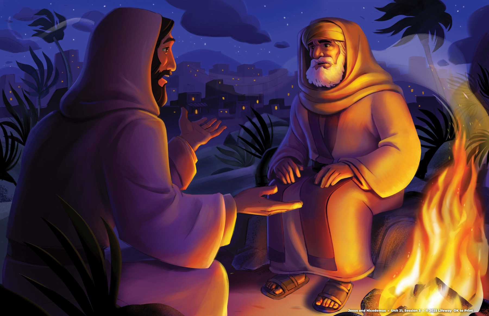

1
Why did Nicodemus visit Jesus?
He had questions and believed Jesus had come from God.
A nighttime visit. A surprising question. A new kind of life.

Story artwork: Lifeway | The Gospel Project: Kids
He was a religious leader who had seen the things Jesus did. He believed Jesus had come from God.
The Gospel Project: Kids | John 3:1-2
Jesus said a person must be born again to enter the kingdom of God.
The Gospel Project: Kids | John 3:3
Nicodemus wondered how an older person could be born again. He was thinking about a baby being born.
The Gospel Project: Kids | John 3:4-8
Jesus compared the Spirit's work to the wind. We cannot see where the wind comes from or where it goes.
The Gospel Project: Kids | John 3:5-8
Jesus said the Son of Man would be lifted up so everyone who believes in Him may have eternal life.
The Gospel Project: Kids | John 3:14-15; see Numbers 21:4-9
God loved the world and gave His Son. Everyone who believes in Jesus may have eternal life.
The Gospel Project: Kids | John 3:16-17
No. Jesus never sinned.
Big Picture Question and Key Passage | The Gospel Project: Kids, Unit 21
Choose a question. Tap to reveal a short answer cue.
Discussion cues adapted from the Younger Kids Leader Guide | John 3
God, thank You for loving the world and sending Jesus to save us. Thank You that Jesus never sinned and gives eternal life to everyone who believes. Help us trust You and follow the new life Your Spirit gives. Amen.
Prayer based on John 3 and the lesson's Christ connection